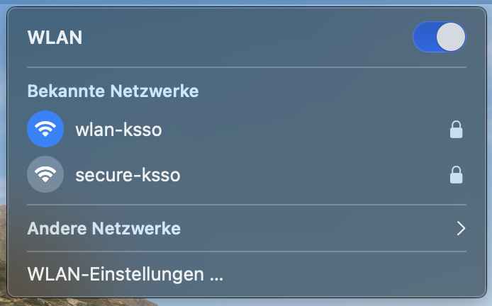
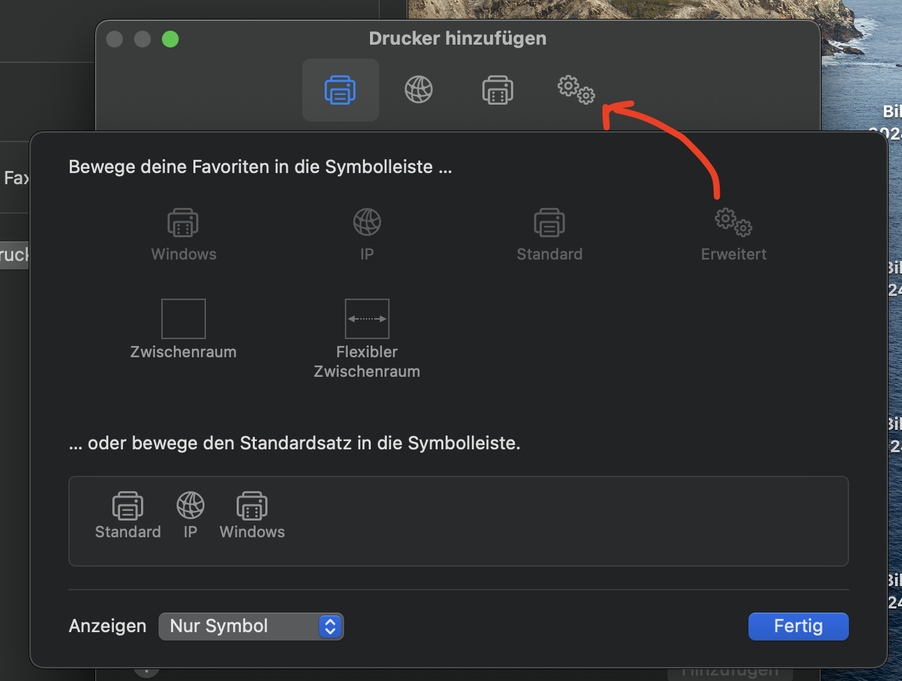

Setting up the mediothek printer
If you're reading this, you're dealing with a mac user. good luck lol
- Make sure they're connected to wlan-ksso

- Open up System Settings
- Select "Drucker & Scanner"

- Select "Drucker, Scanner oder Fax hinzufügen"

- *this is really fucking stupid* Right-Click on the TOP BAR WITH THE ICONS and select "Symbolleiste anpassen"

- Drag "Erweitert" into the Top Bar

- Click on the new icon
- Fill out the fields accordingly

- Add the printer
- Make the user aware that upon an authentication request, they'll need to use their KSSO-Credentials
Man fuck this steaming shit OS.